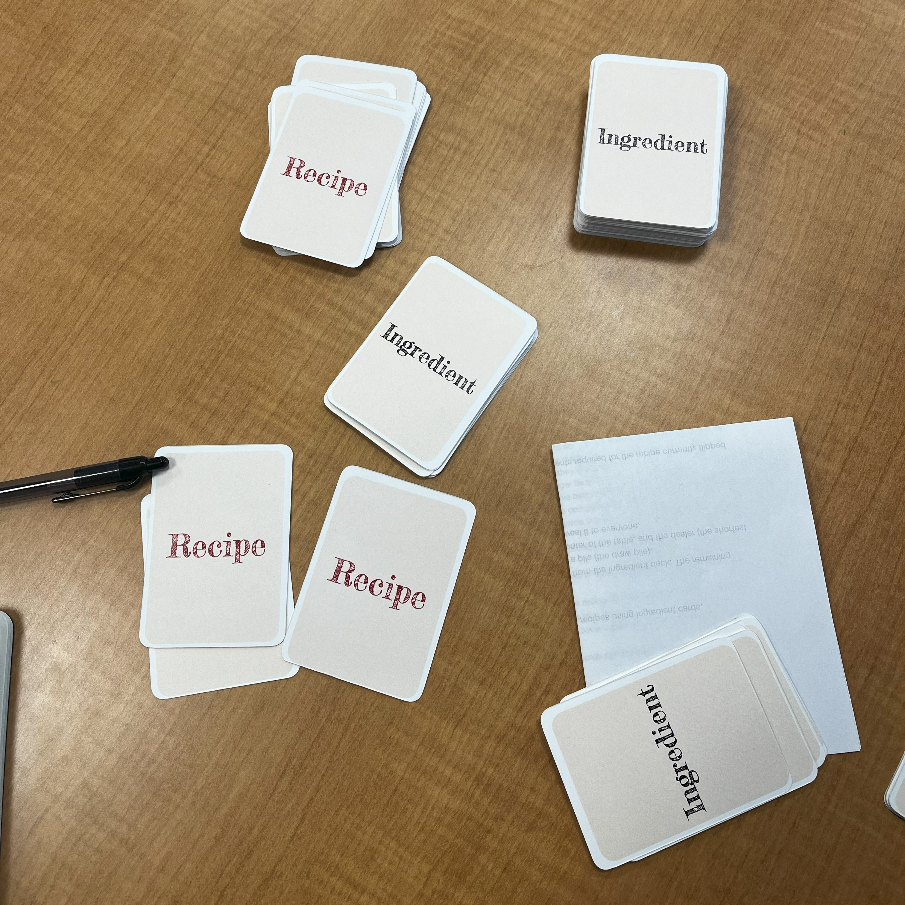

Odd & Ends
About the Game
Order Up! is a fast-paced card game I desighed where players compete as chefs to complete recipes using ingredient cards. Through a mix of strategic resource management and quick decision-making, players try to balance the ingredients in their hand while watching out for penalty cards that could derail their progress.
several rounds of playtesting, key improvements were made:
- Simplified recipe requirements for better game flow
- Added wildcards to prevent gameplay stagnation
- Introduced penalty cards for player interaction
- Adjusted ingredient card distribution for better balance
- Modified win conditions for more satisfying gameplay
Final Design
The final game features carefully balanced card distribution:
- Recipe requirements ranging from 1-3 ingredients
- 26 Recipe Cards with varying complexity
- 56 Ingredient Cards spread across 12 different types
- 6 Wildcard "Fully Stocked Fridge" cards that can substitute any ingredient
- 6 Penalty Cards that force discards (One Star Review) or recipe forfeitures (Health Code Violation)
